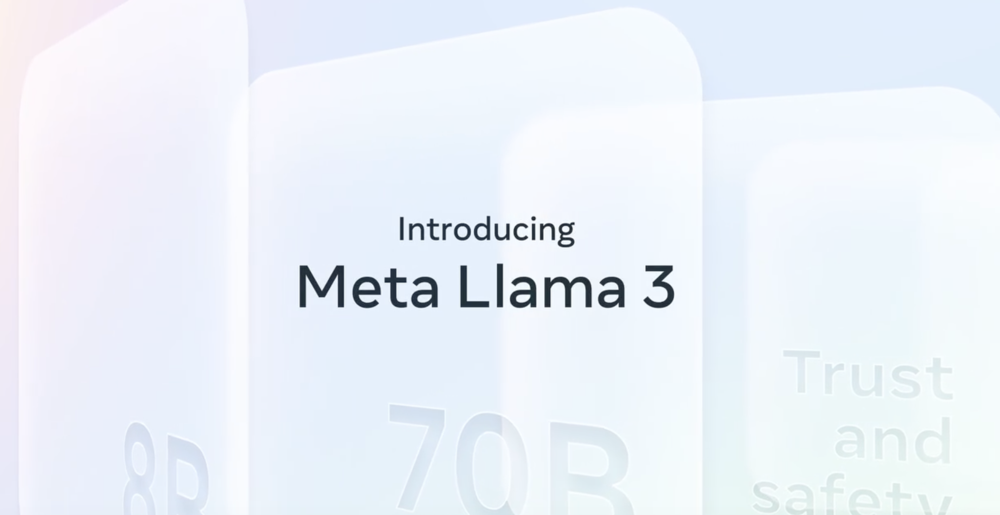
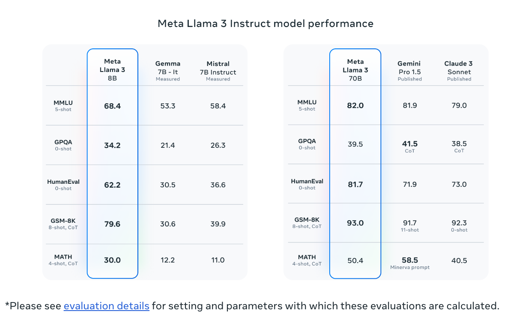
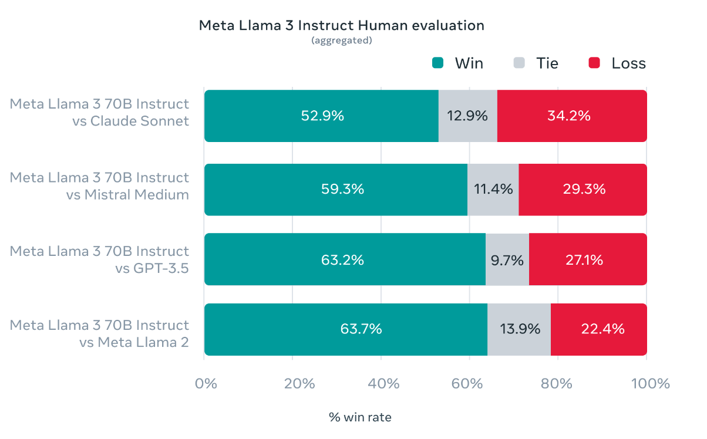
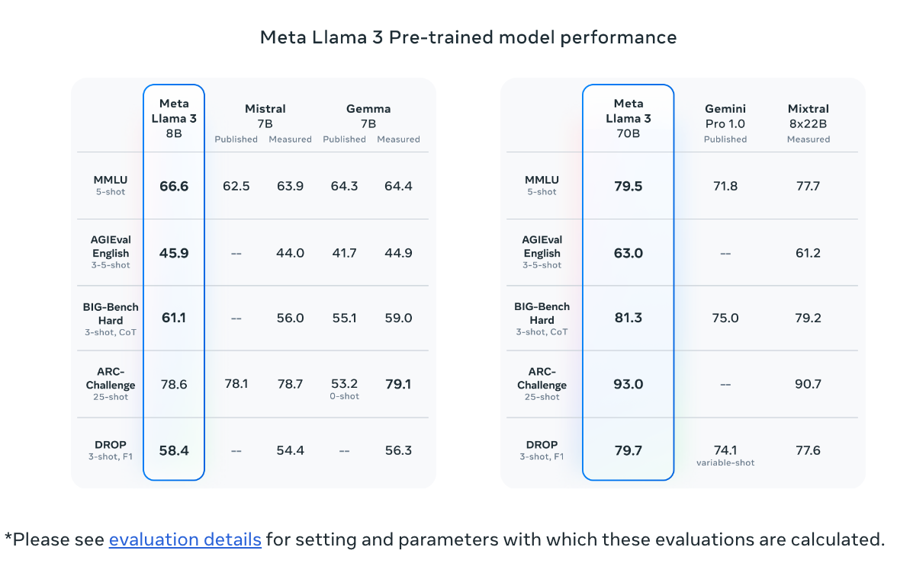
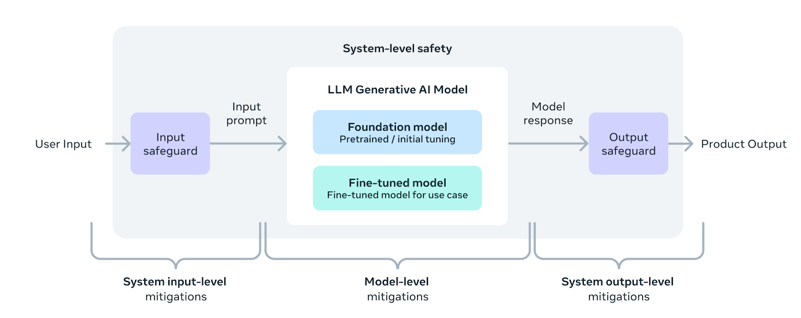

class: center, middle # Getting Started with Llama3 ## Lucas Soares ### 11-06-2024 --- # Methodology Notes The presentation will be organized into the following structure: -- 1. Presentation Block -- 2. Notebook Demo -- 3. Quick Q&A + Summary -- 4. Optional Exercise During Q&A -- 5. Repeat --- # LLMs Predict the Next Word <img src="../notebooks/assets-resources/text-prediction-blnks.png" style="width: 100%"> --- # LLMs Predict the Next Word <img src="../notebooks/assets-resources/chatgpt-text-prediction-1.png" style="width: 80%; margin-top: -10pt; margin-left: 80px; margin-top: -10pt; margin-left: 80px"> --- # LLMs Predict the Next Word <img src="../notebooks/assets-resources/chatgpt-text-prediction-2.png" style="width: 80%; margin-top: -10pt; margin-left: 80px"> --- # LLMs Predict the Next Word <img src="../notebooks/assets-resources/chatgpt-text-prediction-3.png" style="width: 80%; margin-top: -10pt; margin-left: 80px"> --- # LLMs Predict the Next Word <img src="../notebooks/assets-resources/chatgpt-text-prediction-4.png" style="width: 80%; margin-top: -10pt; margin-left: 80px"> --- # LLMs Predict the Next Word <img src="../notebooks/assets-resources/chatgpt-text-prediction-5.png" style="width: 80%; margin-top: -10pt; margin-left: 80px"> --- # LLMs Predict the Next Word <img src="../notebooks/assets-resources/chatgpt-text-prediction-6.png" style="width: 80%; margin-top: -10pt; margin-left: 80px"> --- # LLMs Predict the Next Word <img src="../notebooks/assets-resources/chatgpt-text-prediction-7.png" style="width: 80%; margin-top: -10pt; margin-left: 80px"> --- <img src="../notebooks/assets-resources/llm_predicts_pancakes.png" style="width: 100%;margin-top: 100pt;"> --- <img src="../notebooks/assets-resources/llm-prob-distributions-context.png" style="width:100%; margin-top: 40pt;"> --- # Introduction to Llama3  --- # Llama3 Release - LLM Released by Meta in April of 2024 -- - Open source with a Commercial license (just like Llama2) -- - [Meta Llama3 Resources](https://ai.meta.com/llama/#resources) --- # Incredible Performance in 2 sizes - Llama3 is OPEN SOURCE - [Released in 2 sizes: 8B and 70B parameters.](https://ai.meta.com/blog/meta-llama-3/) - Incredible evaluation performances for both 70B and 8B models ---  <p style="font-size: 14px; margin-top:50pt;"> <a href='https://ai.meta.com/blog/meta-llama-3/#:~:text=a%20system-level%20approach%20to%20responsibility'>Meta AI Llama3 Release Blog Post</a> </p> ---  <p style="font-size: 14px; margin-top:50pt;"> <a href='https://ai.meta.com/blog/meta-llama-3/#:~:text=a%20system-level%20approach%20to%20responsibility'>Meta AI Llama3 Release Blog Post</a> </p> ---  <p style="font-size: 14px; margin-top:50pt;"> <a href='https://ai.meta.com/blog/meta-llama-3/#:~:text=a%20system-level%20approach%20to%20responsibility'>Meta AI Llama3 Release Blog Post</a> </p> --- # Llama3 Technical Details - Data: Trained on over 15 trillion tokens of text data -- - Context length: 8192 tokens -- - System level approach for responsible development  <p style="font-size: 14px; margin-top:50pt;"> <a href='https://ai.meta.com/blog/meta-llama-3/#:~:text=a%20system-level%20approach%20to%20responsibility'>Meta AI Llama3 Release Blog Post</a> </p> --- class: center,middle <h1> <span style="background-color: lightgreen"> Notebook Demo - Introduction to Llama3 </span> </h1> --- # Query Your Docs Locally with Llama3 - Need for LLMs with access to context-relevant data. <img src="../notebooks/assets-resources/private-qa-llama2.png" width="50%" style="margin-left: 30pt;"> --- # Query Your Docs Locall with Llama3 - Privacy concern with closed source LLMs. <img src="../notebooks/assets-resources/llama2-rag-intro.png" width="50%" style="margin-left: 30pt;"> --- # Query Your Docs Locall with Llama3 - Solution? Llama3! <img src="../notebooks/assets-resources/llama2-rag-limitations.png" width="50%" style="margin-left: 30pt;"> --- # RAG with Llama3 - RAG - Retrieval Augmented Generation <img src="../notebooks/assets-resources/llama2-rag-what-why.png" width="80%"> --- # RAG with Llama3 - LLMs have a limited context length <img src="../notebooks/assets-resources/llama2-embeddings-content.png" width="80%"> --- # Q&A RAG Tech Friction of Access - Framework for RAG Systems - Friction of Access <img src="../notebooks/assets-resources/tech-friction-access.png" width="80%"> <p style="font-size: 14px; margin-top:50pt;"> <a href='https://python.langchain.com/docs/use_cases/question_answering/'>Langchain Docs</a> </p> --- <img src="../notebooks/assets-resources/rag-llama3/rag-llama3.001.jpeg" style="width: 130%; margin-left:-100pt";> <p style="font-size: 14px; margin-top:50pt;"> <a href='https://python.langchain.com/docs/use_cases/question_answering/'>Langchain Docs</a> </p> --- <img src="../notebooks/assets-resources/rag-llama3/rag-llama3.002.jpeg" style="width: 130%; margin-left:-100pt";> <p style="font-size: 14px; margin-top:50pt;"> <a href='https://python.langchain.com/docs/use_cases/question_answering/'>Langchain Docs</a> </p> --- <img src="../notebooks/assets-resources/rag-llama3/rag-llama3.004.jpeg" style="width: 130%; margin-left:-100pt";> <p style="font-size: 14px; margin-top:50pt;"> <a href='https://python.langchain.com/docs/use_cases/question_answering/'>Langchain Docs</a> </p> --- <img src="../notebooks/assets-resources/rag-llama3/rag-llama3.005.jpeg" style="width: 130%; margin-left:-100pt";> <p style="font-size: 14px; margin-top:50pt;"> <a href='https://python.langchain.com/docs/use_cases/question_answering/'>Langchain Docs</a> </p> --- <img src="../notebooks/assets-resources/rag-llama3/rag-llama3.006.jpeg" style="width: 130%; margin-left:-100pt";> <p style="font-size: 14px; margin-top:50pt;"> <a href='https://python.langchain.com/docs/use_cases/question_answering/'>Langchain Docs</a> </p> --- <img src="../notebooks/assets-resources/rag-llama3/rag-llama3.007.jpeg" style="width: 130%; margin-left:-100pt";> <p style="font-size: 14px; margin-top:50pt;"> <a href='https://python.langchain.com/docs/use_cases/question_answering/'>Langchain Docs</a> </p> --- <img src="../notebooks/assets-resources/rag-llama3-pipeline/rag-llama3-pipeline.001.jpeg" style="width: 130%; margin-left:-100pt";> --- <img src="../notebooks/assets-resources/rag-llama3-pipeline/rag-llama3-pipeline.002.jpeg" style="width: 130%; margin-left:-100pt";> --- <img src="../notebooks/assets-resources/rag-llama3-pipeline/rag-llama3-pipeline.003.jpeg" style="width: 130%; margin-left:-100pt";> --- <img src="../notebooks/assets-resources/rag-llama3-pipeline/rag-llama3-pipeline.004.jpeg" style="width: 130%; margin-left:-100pt";> --- <img src="../notebooks/assets-resources/rag-llama3-pipeline/rag-llama3-pipeline.005.jpeg" style="width: 130%; margin-left:-100pt";> --- <img src="../notebooks/assets-resources/rag-llama3-pipeline/rag-llama3-pipeline.006.jpeg" style="width: 130%; margin-left:-100pt";> --- class: center, middle # Q&A / Break --- <img src="../notebooks/assets-resources/finetuning-llama3/finetuning-llama3.001.jpeg" style="width: 130%; margin-left:-100pt";> <p style="font-size: 14px; margin-top: 50pt;"> <a href='https://arxiv.org/pdf/2307.09288'>LLama2 Paper</a> </p> --- <img src="../notebooks/assets-resources/finetuning-llama3/finetuning-llama3.002.jpeg" style="width: 130%; margin-left:-100pt";> <p style="font-size: 14px; margin-top: 50pt;"> <a href='https://www.youtube.com/watch?v=g68qlo9Izf0&t=2935s'>Efficient Fine-Tuning for Llama-v2-7b on a Single GPU</a> </p> --- <img src="../notebooks/assets-resources/finetuning-llama3/finetuning-llama3.003.jpeg" style="width: 130%; margin-left:-100pt";> <p style="font-size: 14px; margin-top: 50pt;"> <a href='https://www.youtube.com/watch?v=g68qlo9Izf0&t=2935s'>Efficient Fine-Tuning for Llama-v2-7b on a Single GPU</a> </p> --- <img src="../notebooks/assets-resources/finetuning-llama3/finetuning-llama3.004.jpeg" style="width: 130%; margin-left:-100pt";> <p style="font-size: 14px; margin-top: 50pt;"> <a href='https://www.youtube.com/watch?v=g68qlo9Izf0&t=2935s'>Efficient Fine-Tuning for Llama-v2-7b on a Single GPU</a> </p> --- <img src="../notebooks/assets-resources/finetuning-llama3/finetuning-llama3.005.jpeg" style="width: 130%; margin-left:-100pt";> --- <img src="../notebooks/assets-resources/finetuning-llama3/finetuning-llama3.006.jpeg" style="width: 130%; margin-left:-100pt";> <p style="font-size: 14px; margin-top: 50pt;"> <a href='https://arxiv.org/pdf/2106.09685'>Lora Paper</a> </p> ---